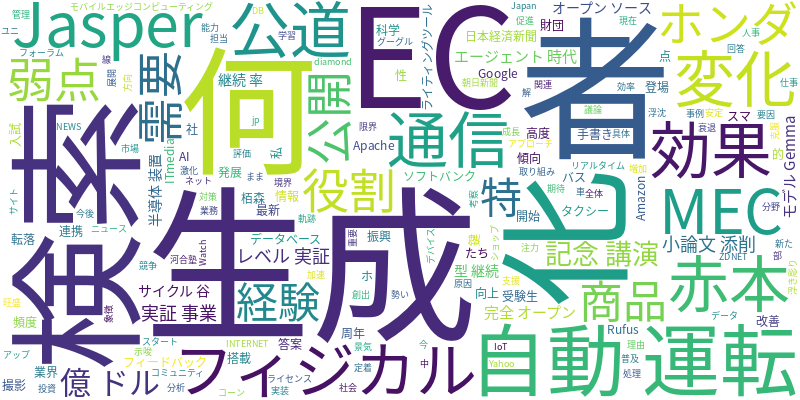

☁️ 今日のトレンドワード

📰 今日のピックアップニュース (10件)
MECが鍵、フィジカルAI×通信の新展開
ソフトバンクなど3社が、MEC（モバイルエッジコンピューティング）を活用したフィジカルAIと通信の連携に注力。IoTデバイスのリアルタイム処理とAI分析を高度化し、新たなサービス創出を目指す。
AIライティングツールJasper、15億ドルから転落の軌跡
かつてAIライティングツールとして15億ドルの評価を得たJasper AI。しかし、市場の変化と競争激化により、その勢いは衰退。AIスタートアップの浮沈を象徴する事例となった。
AIは何を知り、何をしていないのか？ 記念講演が問いかける
栢森情報科学振興財団の30周年記念講演では、AIの「知っている」ことと「していない」ことの境界線が議論された。現在のAIの能力と限界、そして今後の発展の方向性が示唆された。
「赤本AI」登場、小論文添削でAIが受験生を支援
河合塾は、入試小論文をAIで添削するサービス「赤本AI」を発表。手書き答案をスマホで撮影し、AIが改善点をフィードバック。受験生の学習効果向上に期待がかかる。
ホンダ、AI自動運転「レベル4」実証事業を公道で開始
ホンダは、AI自動運転技術「レベル4」の実証事業を公道で開始。バスやタクシーへの搭載を目指し、高度な自動運転技術の社会実装に向けた取り組みを進めている。
生成AI活用でも忙しい？ その理由と対策
生成AIが普及する中で、なぜ私たちは依然として忙しいのか。その原因と、AIを効果的に活用し、業務効率をさらに向上させるための具体的なアプローチを探る。
生成AIの弱点補う、AIエージェント時代のDBの役割
生成AIの「弱点」をどのように克服し、AIエージェント時代におけるデータベースの役割がどう変化していくのかを考察。AIとデータ管理の連携の重要性が浮き彫りになる。
Google、完全オープンソースのAIモデル「Gemma 4」公開
Googleは、最新AIモデル「Gemma 4」を「Apache 2.0」ライセンスで完全オープンソースとして公開。開発者コミュニティの活用を促進し、AI技術の発展を加速させる。
AI需要が半導体装置サイクルの「谷」を打ち消す
AI分野における旺盛な需要が、半導体装置業界の景気サイクルの「谷」を打ち消す効果をもたらしている。AI関連投資が業界全体の安定成長を支える要因となっている。
AI商品検索経験者64%、EC特化型AIの継続利用率が高い
ECサイトでのAI商品検索経験者は64%に達し、特にEC特化型AIの継続利用率が高い傾向。Amazon Rufusの利用頻度が増加したという回答は75%に上り、AI検索の定着が進む。
本日のAI・テック業界は、AIの社会実装が加速する一方で、その限界や課題も浮き彫りになった一日でした。フィジカルAIと通信の連携（ID:0）、AI自動運転の実証実験（ID:4）など、現実世界でのAI活用が進む兆しが見えます。また、AIによる教育支援（ID:3）も登場し、身近な場面でのAIの浸透が加速しています。一方で、AIライティングツールのJasperの転落（ID:1）や、生成AIを活用しても解消されない「忙しさ」（ID:5）など、AIのビジネス利用における課題も指摘されています。AIが「何を知っているか、何をしていないか」（ID:2）という根本的な問い直しや、AIの弱点を補うデータベースの役割（ID:6）など、AIの成熟に向けた議論も深まっています。さらに、GoogleによるオープンソースAIモデルの提供（ID:7）は、開発コミュニティの活性化を促すでしょう。半導体業界（ID:8）やEC業界（ID:9）でもAI需要が顕著であり、AIが各産業の成長を牽引する力は増すばかりです。AIの可能性と課題の両面を見据え、今後の発展に注目が集まります。